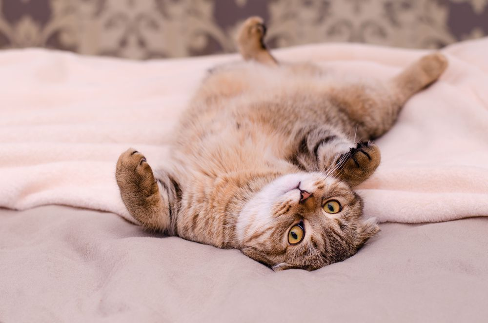

How Do You Know Your Cat Trusts You?
Cats can be subtle with their affection, but once they trust you, they show it in unique and heartwarming ways. Trust from a cat isn’t automatic—it’s built over time through consistent care, respect, and patience.
Key Behaviors That Signal Trust
- Slow Blinking: If your cat looks at you and blinks slowly, it’s like a kitty kiss. Try slow-blinking back!
- Kneading: When they push their paws rhythmically on you or soft surfaces, it’s a throwback to kitten comfort.
- Showing Their Belly: If your cat flops over and exposes their stomach, that’s huge—they feel safe.
- Following You Around: Even if it’s just to sit nearby, your cat wants to be part of your world.
- Head Butting: This behavior marks you with their scent and signifies deep bonding.
- Sleeping Near You: Cats only rest near those they feel secure around.
- Tail Wrapped Around You: Like a feline hug, it’s a sure sign of comfort and affection.
Trust Is Earned, Not Demanded
Every cat is different—some are naturally cuddly, while others need more space. What matters is that you meet your cat where they’re at. Give them choice, consistency, and calmness, and they’ll likely reward you with their trust over time.

A trusting cat might lie like this—vulnerable and relaxed.